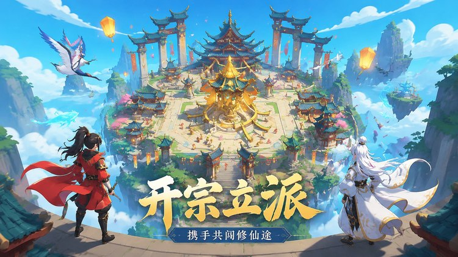
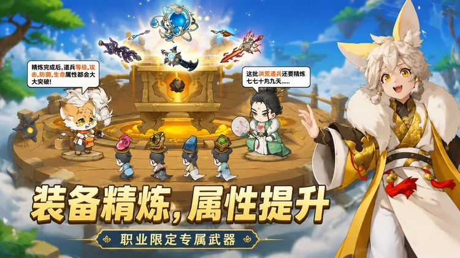
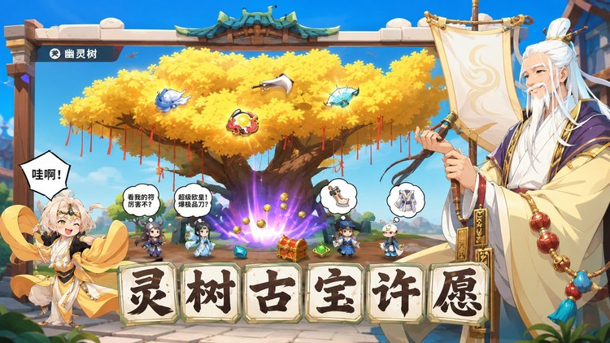

修仙家族模拟器2 · 全部 7 篇
覆盖开局轮回规划、炼气/筑基/化神三段破境、红尘阁加点、深海龙王与彩环海域——照着做就能少走十年弯路。
仙01新手开荒与弟子培养：从零打造修真世家开局天赋怎么选、功德怎么攒、弟子怎么招怎么筛、混沌珠驻守怎么排——修仙家族模拟器2 第一年的完整发展路线。阅读约 5 分钟 · 5 节 · 更新于 2026-11-04仙02进阶玩法：天道筑基、灵兽养成与非绑定灵石功德攒够之后的三件大事：天命/天道筑基的数值门槛、灵兽捕捉喂养与秘境联动、非绑定灵石的稳定赚法。阅读约 5 分钟 · 4 节 · 更新于 2026-11-04仙03红尘阁技能点加点：三阶段路线与避坑先人口、再经济、后反哺——红尘阁三大分支的边际效益与开荒/发展/成熟期的加点占比。阅读约 3 分钟 · 4 节 · 更新于 2026-10-16仙04化神法则获取：全途径盘点与渡劫准备化神不再是堆灵气吃丹药——法则从哪来、纯度怎么提、灵根不匹配怎么办，元婴圆满后的完整破境路线。阅读约 4 分钟 · 4 节 · 更新于 2026-10-11仙05突破炼气大全：极速破境与家族筑基炼气期是家族的第一道生死关：灵根怎么分档、灵脉聚灵阵怎么用、丹药怎么配，从引气入体到大圆满的全流程。阅读约 3 分钟 · 4 节 · 更新于 2026-10-11仙06深海龙王打法：平民越级攻坚全指南土克水是总纲：水抗拉到及格线、土系大阵压制回血、三阶段机制逐个拆——金丹后期也能越级斩龙。阅读约 4 分钟 · 4 节 · 更新于 2026-10-11仙07彩环海域攻略：灵岛探索与奇遇全指南外环养家、中环争霸、内环搏命——三大环带的资源格局、探索编队、洞府破解与守岛布防。阅读约 4 分钟 · 5 节 · 更新于 2026-10-11
游戏特色 · 官方图集
取自《修仙家族模拟器2》官方网站宣传图，原图完整展示，图片版权归原厂商所有。

